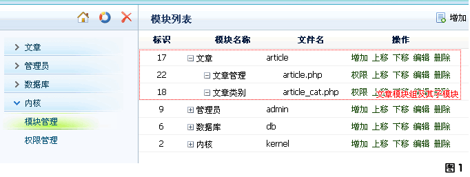

视图文件默认全部存放在 /admin/template/ 文件夹下，当然也可以在 /includes/systemconfig.php 中配置视图文件夹的路径 $_CFG['DIR_ADMIN_TPL'] 来更改默认的视图文件存放地址。
通常视图文件的名称和模块文件名称相同，以下图中的 "文章模块组以其子模块"为例，我们需要建立两个视图文件：
1. 文章管理视图文件：/admin/template/article.html
2. 文章类别视图文件：/admin/template/article_cat.html

在视图文件中，我们同样以功能点来划分每块代码段，通常以变量 $tpl['_body'] 来区分。视图功能点一般与
模块文件中的功能点相对应，常见的有增加('add')，编辑('edit')，列表('list')等。此外，还可以通过 $tpl['_header'] 变量来控制显示头部视图文件中公用的HTML代码块。
以下就是一个典型的视图文件代码结构：
?php if( $tpl['_header'] ){ include($_CFG['DIR_ADMIN_TPL'].'header.html'); }?
?php if( $tpl['_body'] == 'list' ){ ?
!-- 列表的HTML代码 --
?php }elseif( $tpl['_body'] == 'add' || $tpl['_body'] == 'edit' ){ ?
!-- 增编的HTML代码 --
?php } ?